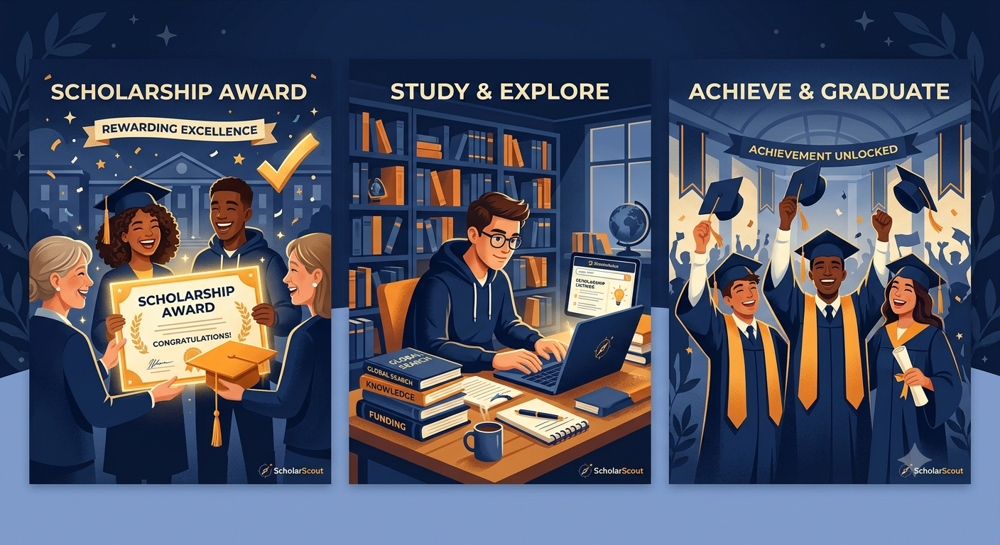

SCHOLAR SCOUT
about us
|
register
|
login

news1 National Scholarship Portal (NSP) applications are now open for eligible students—check the latest scholarship opportunities and apply before the deadline.
news2 New merit-based scholarships announced for undergraduate students with excellent academic performance.
news3 Important Reminder: Students must submit their income certificates, academic records, and other required documents before applying for scholarships.
news4 Government scholarship schemes are now available for economically weaker students to support their higher education.
news5 Several private organizations have announced new scholarship programs for engineering and technology students.
news6 Scholarship applications for the 2026–27 academic year are opening soon—prepare your documents in advance.
news7 Don't miss out! Check the eligibility criteria and application deadlines before applying for any scholarship.
news8 New financial assistance opportunities announced for students pursuing undergraduate and postgraduate degrees.
news9 Students can now explore multiple scholarship opportunities based on family income, academic merit, category, and course of study.
news10 Application status update: Students are advised to regularly check their scholarship portals for verification updates and payment status.
Scholarship Discovery Platform:
ScholarScout is designed to help students discover scholarship opportunities that match their academic background and personal preferences.
Personalized Student Profiles:
Students can register and create profiles by providing details such as academic qualifications, family income, course, institution, and other relevant information.
Smart Scholarship Matching:
The platform identifies scholarships for which students meet the eligibility criteria, reducing the effort required to search through multiple scholarship websites.
Wide Range of Opportunities:
Students can explore government scholarships, private scholarships, merit-based awards, need-based financial assistance, and institution-specific funding opportunities.
Eligibility-Based Recommendations:
ScholarScout filters scholarships based on factors such as academic performance, annual family income, category, course, and other eligibility requirements.
Centralized Scholarship Information:
Instead of visiting multiple websites, students can access scholarship details, eligibility requirements, application deadlines, and relevant application links in one place.
Easy Registration & Login:
The platform provides a simple registration and authentication system, allowing students to securely access their personalized dashboard whenever they log in.
Dedicated Student Dashboard:
After logging in, students can navigate to their profile, explore recommended scholarships, and manage their scholarship-related information.
Reduced Search Effort:
By automatically matching student profiles with scholarship requirements, ScholarScout minimizes repetitive searches and helps students discover opportunities they might otherwise miss.
Student-Focused Mission:
ScholarScout aims to make educational financial assistance easier to discover, helping deserving students identify opportunities that support their academic journey.
SERVICES
SAVINGS
FIXED DEPOSIT
CREDIT CARDS
LOAN
 SCHOLAR SCOUT
SCHOLAR SCOUT